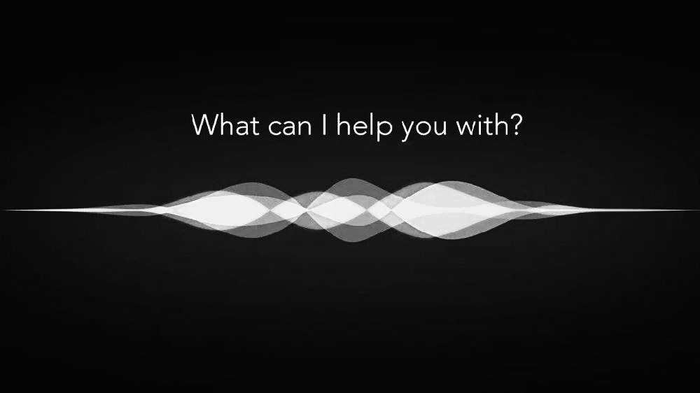

AI = Artificial Intelligence
人工智能（英语：Artificial Intelligence，缩写为AI）亦称智械、机器智能，指由人制造出来的机器所表现出来的智能。通常人工智能是指通过普通计算机程序来呈现人类智能的技术。该词也指出研究这样的智能系统是否能够实现，以及如何实现。同时，通过医学、神经科学、机器人学及统计学等的进步，常态预测则认为人类的很多职业也逐渐被其取代。
人工智能于一般教材中的定义领域是“智能主体（intelligent agent）的研究与设计”，智能主体指一个可以观察周遭环境并作出行动以达致目标的系统。约翰·麦卡锡于1955年的定义是“制造智能机器的科学与工程”。安德烈亚斯·卡普兰（Andreas Kaplan）和迈克尔·海恩莱因（Michael Haenlein）将人工智能定义为“系统正确解释外部数据，从这些数据中学习，并利用这些知识通过灵活适应实现特定目标和任务的能力”。
人工智能的研究是高度技术性和专业的，各分支领域都是深入且各不相通的，因而涉及范围极广。人工智能的研究可以分为几个技术问题。其分支领域主要集中在解决具体问题，其中之一是，如何使用各种不同的工具完成特定的应用程序。
AI的核心问题包括建构能够跟人类似甚至超卓的推理、知识、规划、学习、交流、感知、移物、使用工具和操控机械的能力等。人工智能目前仍然是该领域的长远目标。目前弱人工智能已经有初步成果，甚至在一些影像识别、语言分析、棋类游戏等等单方面的能力达到了超越人类的水平，而且人工智能的通用性代表着，能解决上述的问题的是一样的AI程序，无须重新开发算法就可以直接使用现有的AI完成任务，与人类的处理能力相同，但达到具备思考能力的统合强人工智能还需要时间研究，比较流行的方法包括统计方法，计算智能和传统意义的AI。目前有大量的工具应用了人工智能，其中包括搜索和数学优化、逻辑推演。而基于仿生学、认知心理学，以及基于概率论和经济学的算法等等也在逐步探索当中。

Siri, 搭载在苹果设备上的虚拟助手